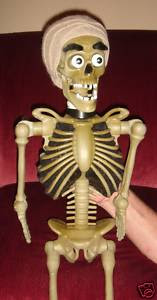

For Sale: Skeleton Doll
10/17/2009
{kind=link}

From Kevin Detweiler
www.animatedpuppets.blogspot.com
Okay. Here’s your opportunity for a awesome one of a kind character. I’m sure you have heard of “ACHMED by Jeff Dunham. Meet his cousin “ACNE”. With a name like that, be ready to break out with laughter! This guy will truly come alive in your hands. Just in time for Halloween or any occasion that you need to add some life to the party!
This is a true 35” Ventriloquist figure. He has a hollow body with head stick, turn head full circle, tilt, nod etc. ADDED FEATURES INCLUDE!.. crazy “POP OUT EYES”- yeah, that’s right, his eyes extend out 1½” from their sockets and then return. "LOWERING EYE BROWS" so he can look angry, frustrated, or mean! Also a "RAISING RIGHT EYE BROW", a little odd I know, but you can see it on my eBay auction (link below). And, of course a "MOVING MOUTH". All easily controlled with one hand from levers mounted on head stick.
There are a variety of ways to use this guy including “drug & alcohol abuse programs”. Be creative and you will come up with many more ideas. For extra help on ideas, we are also including a 36 page book written by Clinton Detweiler & Craig Lovik called “Dem Funny Bones” Many dialogues that entertain without compromising family values. Just a few titles of routines in this book are, “I’ve been everywhere”, “Get connected”, “What happened to you?”, “Carbon dating”, and many more. BID NOW before it’s to late!
http://cgi.ebay.com/ws/eBayISAPI.dll?ViewItem&item=140352701891&ssPageName=STRK:MESELX:IT